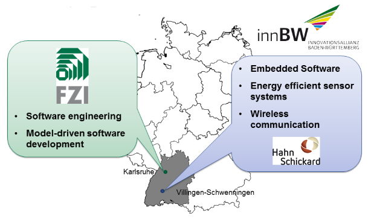
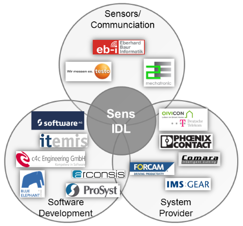

SensIDL - About Us
Project Team
The SensIDL project is mainly driven by the two research institutes FZI Forschungszentrum Informatik am Karlsruher Institut für Technologie and the Institut für Mikro- und Informationstechnik der Hahn-Schickard-Gesellschaft für angewandte Forschung e.V. (Hahn-Schickard) . Both institutes are both located in the federal state Baden-Württemberg in Germany and member of the Innovations Allianz Baden-Württemberg. SensIDL combines the synercaticall expertises of the two institutes as illustrated:Team Members
| FZI |
Hahn-Schickard |
|
|
Accompanying Industrial Committee
With the aim to ensure the industrial relevance of SensIDL project, we implemented an accomponying committee. This committee comprises experts from companies working in different domains ranging from sensor and communication technology over software development and communication frameworks up to solution and system providers as illustrated in the following figure:

The following companies are innvolved in our industrial committee:Sensor development and communication technology:
Software development and communication frameworks:
- Software AG
- Itemis AG
- c4c Engineering GmbH
- arconsis IT-Solutions GmbH
- Blue Elephant
Systems GmbH
- ProSyst Software GmbH
Solution and System Provider
- Deutsche Telekom AG with its Qivicon platform
- PHOENIX CONTACT Deutschland GmbH
- COMARA KG
- FORCAM GmbH
- IMS Gear GmbH